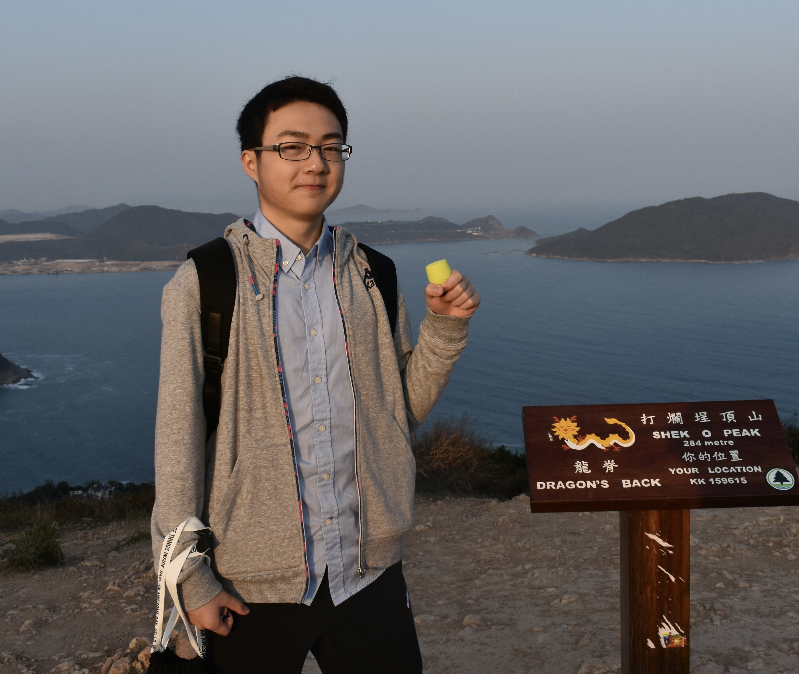

Ze Yun 云泽
Email: ze.yun@stonybrook.edu
I am a Ph.D. student in mathematics at Stony Brook University, advised by Christian Schnell. Before that, I was an undergraduate student at The University of Hong Kong,
My research interests lie in algebraic geometry, especially geometry and topology of algebraic varieties via Hodge theory and non-abelian Hodge theory, applications of mixed Hodge modules, and the geometry of abelian varieties.
I am particularly interested in generic vanishing and Fourier–Mukai transforms of Hodge modules on abelian varieties.

Teaching
Details →- MAT 122: Overview of Calculus with Applications
- MAT 211: Introduction to Linear Algebra
- MAT 313 / MAT 524: Abstract Algebra